Pipelined Processor Design and Extensions
An English edition of the SME309 project report: ARM pipeline implementation, non-stalling multi-cycle execution, cache, floating-point arithmetic, RV32I, and a dual-issue superscalar extension.
Translated and edited from Project_Introduction_Final.pdf. Original diagrams, code screenshots, simulation waveforms, and board-test photographs are retained; repeated reference figures are shown once. Technical limitations and reported results follow the source document.
Project organization
The source project uses the RTL folder for the Verilog implementations of Q1–Q5, the RISCV32I folder for Q6, and the bonus folder for the superscalar processor. Simulation instructions are embedded in the corresponding Wrapper files, with the question number identified above each instruction sequence. These folder names describe the original submission; source-code files were not included with the PDF.
Pipeline hazards
A pipelined processor must handle structural, data, and control hazards. A structural hazard occurs when overlapping instruction stages compete for the same hardware resource. A data hazard occurs when an instruction needs a result that an earlier instruction has not yet made available; reads and writes must preserve the behavior of sequential execution. A control hazard arises when instruction fetching proceeds before a branch condition and target address have been resolved.
Resolution strategies
- Register-file timing: writing during the first half of a cycle and reading during the second half allows a later instruction to observe a value written in that cycle. The report illustrates its use for instructions separated by at least two intervening instructions.
- Stalling and NOP insertion: forwarding alone does not resolve every dependency. A load followed immediately by an instruction that consumes the loaded value may require a bubble.
- Data forwarding: compare the Execute-stage source register addresses with destination addresses in the Memory and Writeback stages, and forward the available result to the consuming functional unit.
- Load-to-store forwarding: compare the register used by a store in the Memory stage with the register written by a load in the Writeback stage, and forward the data when required.
Source diagrams: hazards and forwarding
{kind=link}
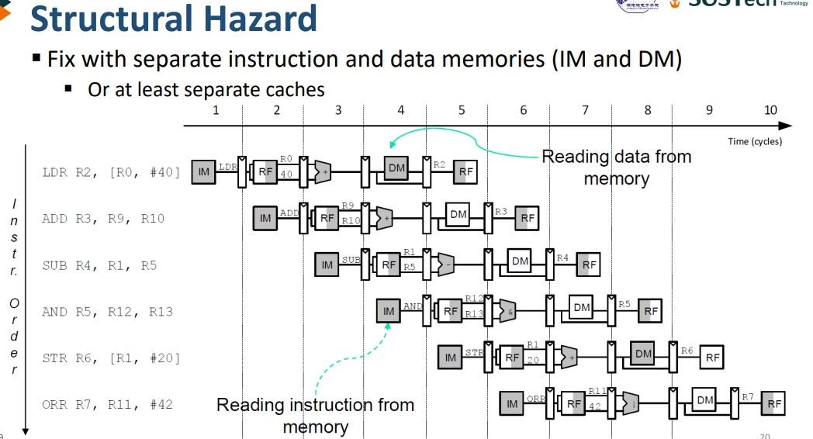
{kind=link}
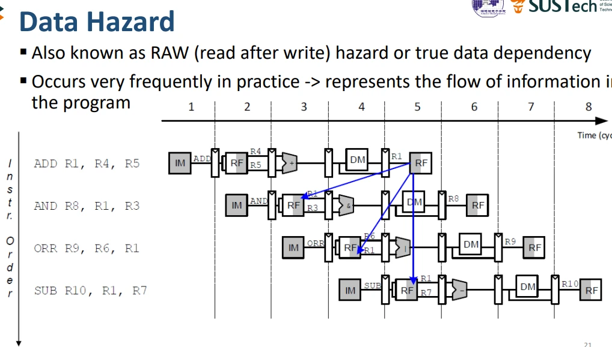
{kind=link}
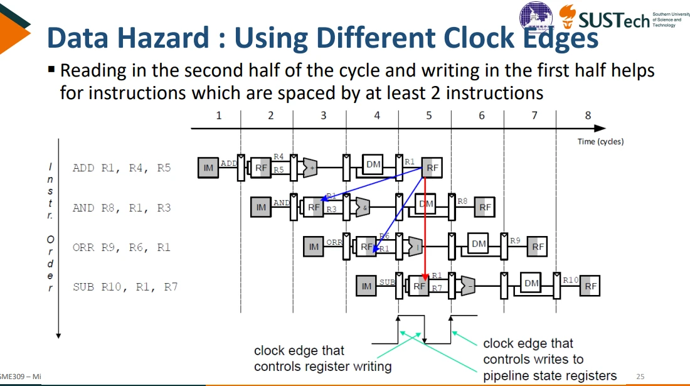
{kind=link}
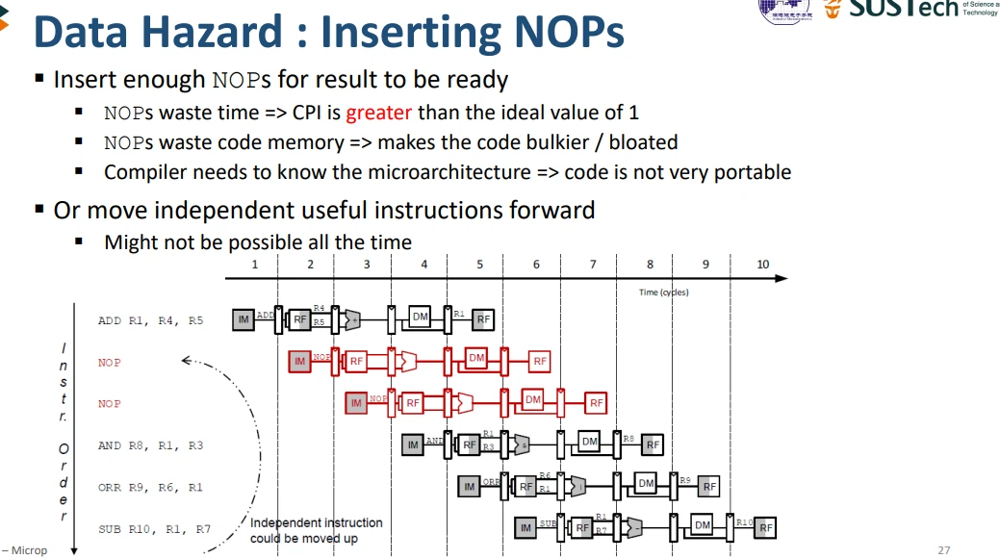
{kind=link}
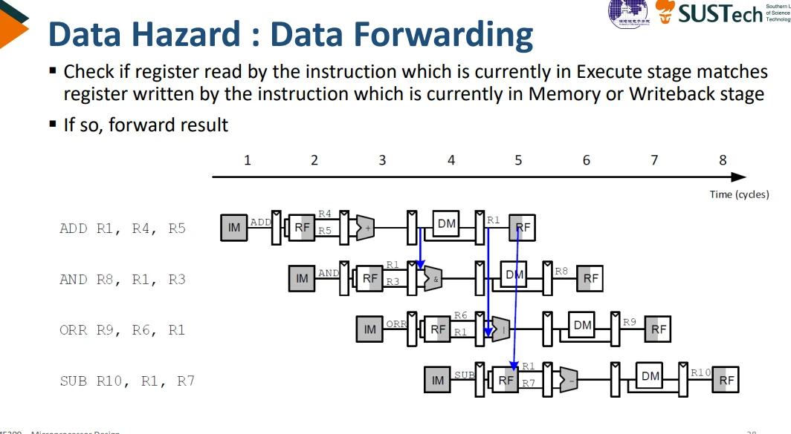
Q1 · Pipelined ARM processor
The first task was to implement a pipelined processor and use forwarding, stalls, and flushes to handle data and control hazards. The forwarding logic checks whether an instruction in Execute reads a register written by an instruction in Memory or Writeback. The latest applicable result is selected from the downstream pipeline registers and delivered to the functional unit when needed.
Implementation choices
- Separate data and control pipeline registers. The original Decoder and CondLogic modules were retained inside the Control Unit. D2E, E2M, and M2W registers were added within that unit to carry control state. Signals are exposed only at the stage where they are needed, reducing top-level wiring and improving readability.
- Restore the shifter and multi-cycle unit. The reference pipeline diagram did not include Shift or MCycle. We added the shifter in the Execute stage because MCycle requires the unshifted register operands. The original operand values are therefore retained until Execute, where one path feeds MCycle and another feeds the ALU path.
- Integrate MCycle alongside the ALU. In Q1, MCycle and the ALU are alternatives: while MCycle is active, its Busy signal stalls all pipeline-register modules. Q2 extends this arrangement to allow independent instructions to continue.
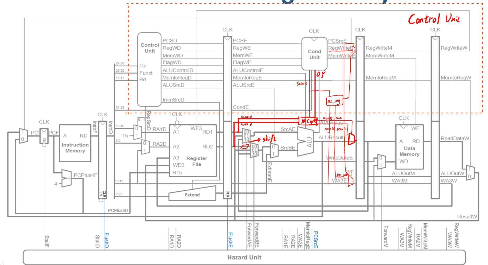
The team tested the design using the Lab 2 testbench and examined register-bank waveforms. The original report includes the assembly sequence and on-board results.
Q1 forwarding reference and verification
{kind=link}
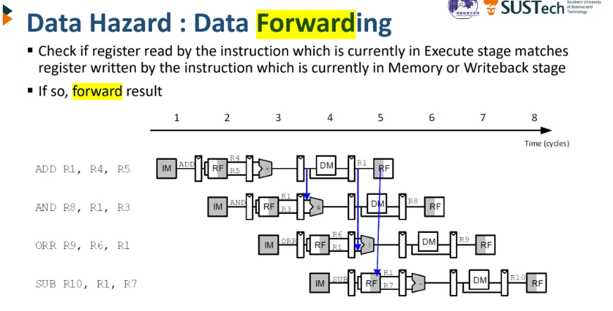
{kind=link}
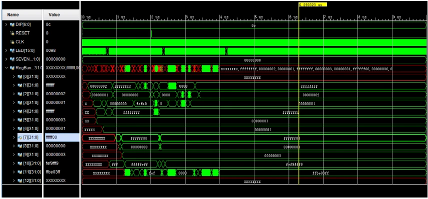
{kind=link}
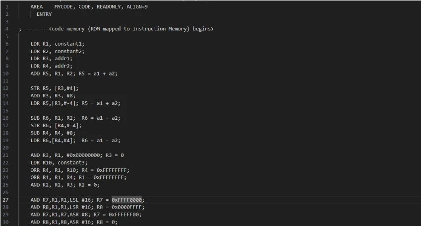
{kind=link}
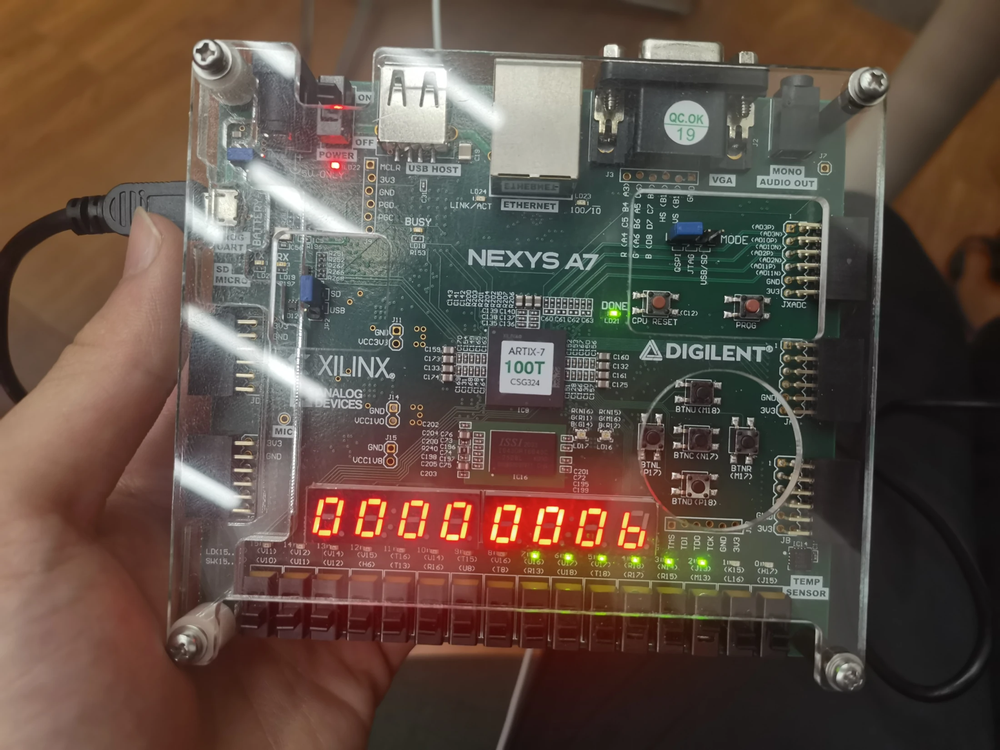
{kind=link}
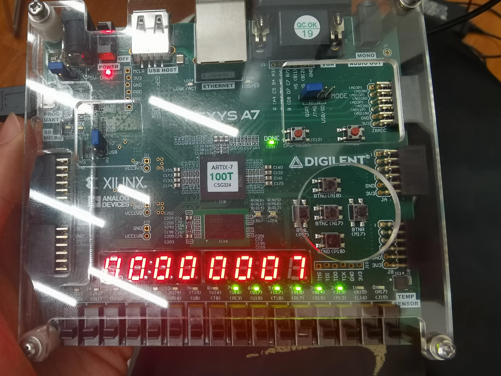
Q2 · Non-stalling multi-cycle execution
The second task allows independent instructions to proceed while MCycle is busy. We first considered operation without a dependency, then added hazard handling.
Operation without a hazard
- Save the destination register address when the multi-cycle operation starts.
- When MCycle finishes, hold and preserve the Execute-stage instruction that would otherwise advance, and substitute the MCycle result for that cycle.
- Override the associated control signals to
PCSrc = 0,RegWrite = 1, andMemWrite = 0. A conditionally disabled instruction never asserts Start, so it does not initiate MCycle.
A register stores the previous Busy state. A completion pulse detects the falling edge:
MCycle_out = Busy_reg & ~i_Busy;This pulse stalls Fetch, Decode, and Execute for the completion cycle and selects the MCycle result and control signals.
Dependencies while MCycle is active
The saved destination address is compared with the incoming source addresses RA1 and RA2. A new instruction that starts MCycle is also a conflict. On a conflict, Fetch and Decode stall and Execute is flushed, inserting a NOP while Memory and Writeback continue. The condition described in the report is:
MCycle_Stall = ((MCycle_addr == RA1) ||
(MCycle_addr == RA2) || StartD) && Busy;Consecutive multi-cycle instructions
Simulation exposed a bug when two multi-cycle instructions arrived consecutively. At the end of multiplication, the next state became IDLE. On the next rising edge, the state register entered IDLE, but the combinational next-state logic could already select COMPUTING. This allowed the following computation to begin without executing initialization. We added signal_reg to reserve one initialization cycle after completion.
Q2 implementation and verification
{kind=link}
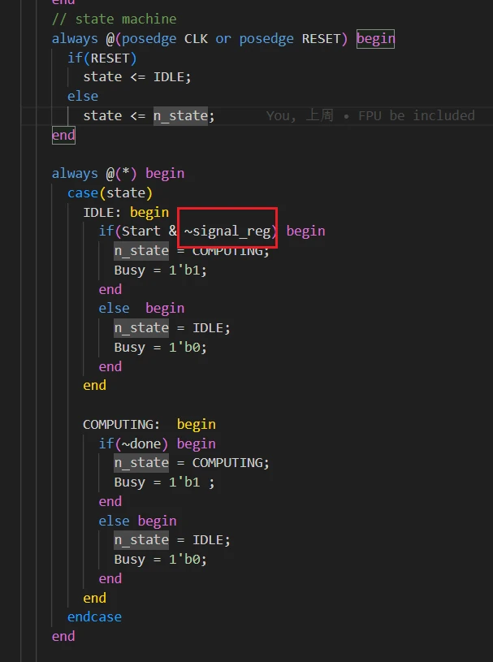
{kind=link}
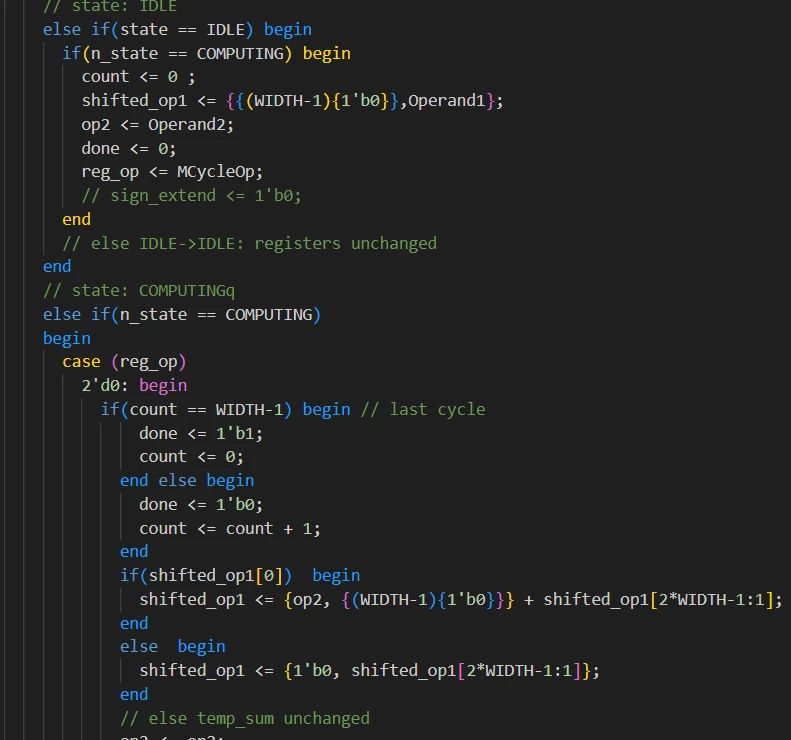
{kind=link}
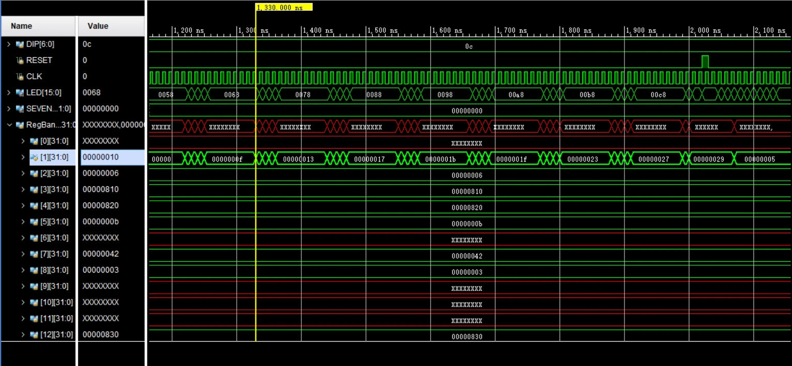
{kind=link}
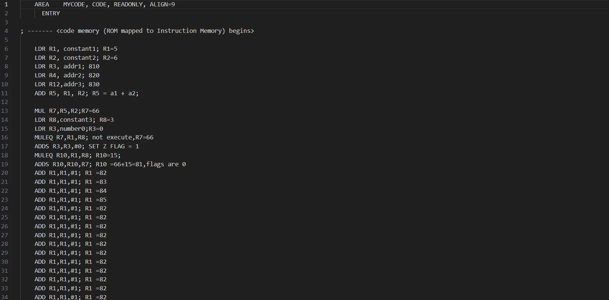
{kind=link}
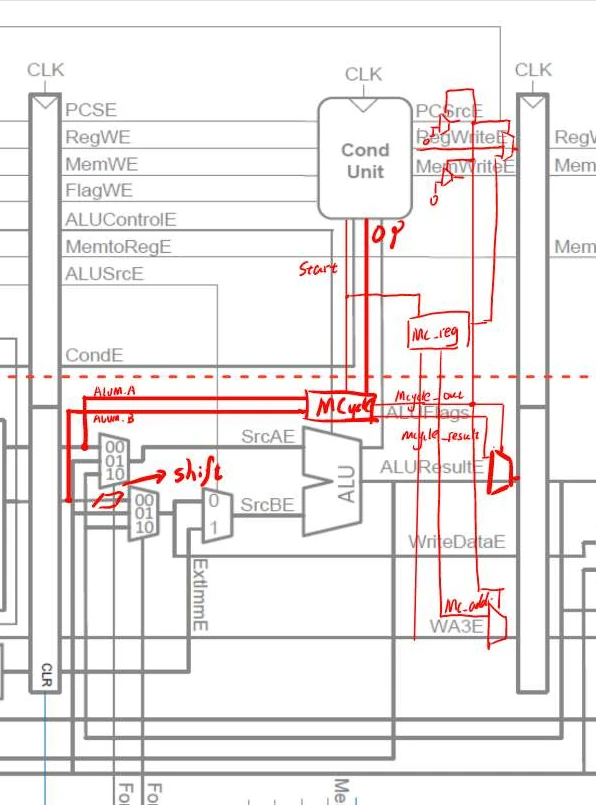
{kind=link}
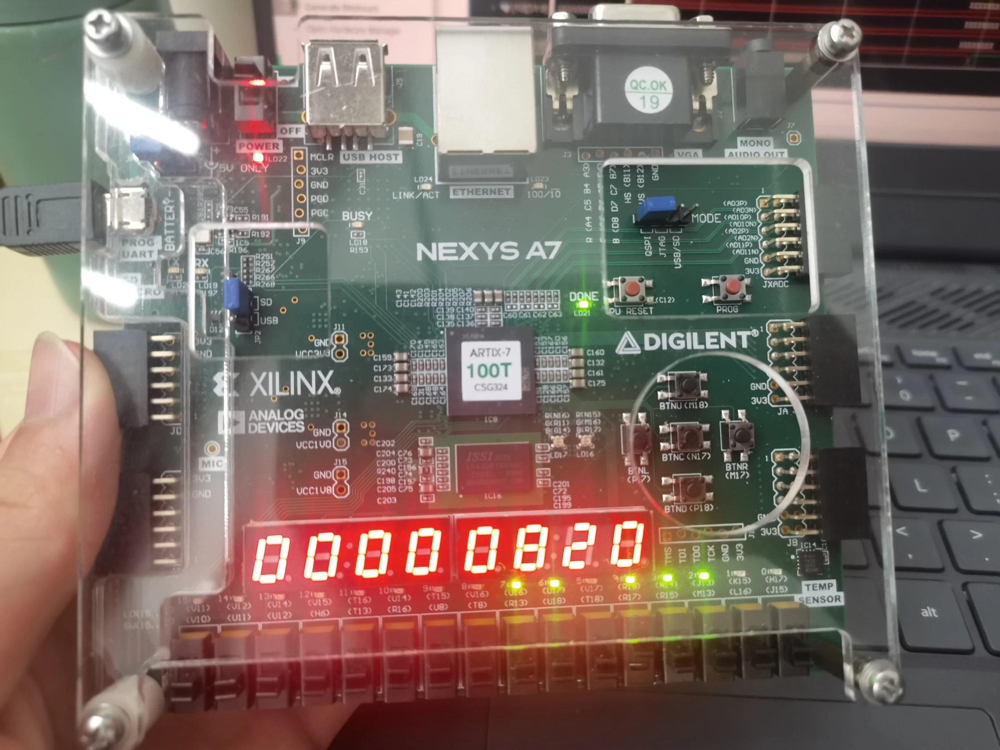
{kind=link}
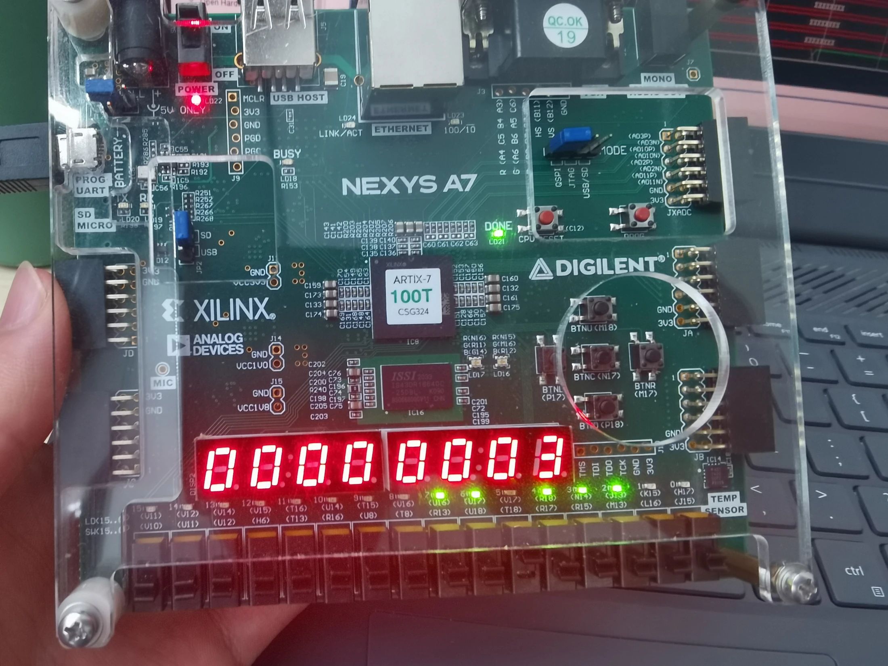
Q3 · All 16 ARM data-processing instructions
After reviewing the ARM reference material, we extended the six previously implemented data-processing instructions with ten additional operations: ADC, BIC, EOR, MOV, MVN, RSB, RSC, SBC, TEQ, and TST.
| Instruction | Required behavior |
|---|---|
| ADC | Addition with carry input. |
| BIC | Bit clear: AND with the complemented second operand. |
| EOR | Bitwise exclusive OR. |
| MOV | Move the second operand to the result. |
| MVN | Move the complemented second operand. |
| RSB | Reverse subtraction: B − A. |
| RSC | Reverse subtraction with carry: B − A − (1 − C). |
| SBC | Subtraction with carry: A − B − (1 − C). |
| TEQ | Exclusive-OR test with no destination-register write. |
| TST | AND test with no destination-register write. |
ALU and decoder changes
- For ADC, SBC, and RSC, a
Carry_usecontrol determines whether the previous carry flag participates in the shared adder:Carry_ALU = Carry_pre & Carry_use. - The Decoder generates
Reverse_B. The expressionRe_src = Reverse_B ? ~Src_B : Src_Blets BIC share the AND path and MVN share the MOV path. - The ALU control field was widened to three bits. XOR uses
3'b100; MOV/MVN use3'b101withALUResult = Re_src. This avoided unnecessary code changes and extra multiplexers. - For RSB and RSC,
Reverse_srcswaps SrcA and SrcB before the adder. - The Decoder suppresses register writes for TEQ and TST.
Condition flags and implementation scope
The design updates the N, Z, C, and V flags, with one explicit exception. For shifted operations other than addition, subtraction, and their related instructions, ARM specifies that C can take the last bit shifted out. Following the earlier lab requirements, the team did not implement that shifter carry-out update. The report therefore describes support for all 16 operations, but does not claim complete architectural compliance for every flag case.
Q3 reference tables and tests
{kind=link}
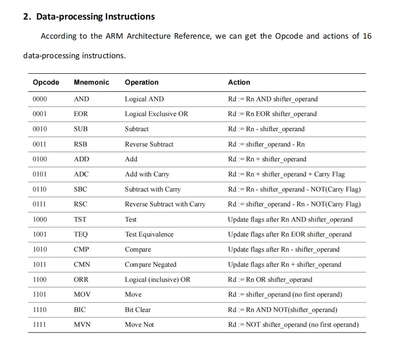
{kind=link}
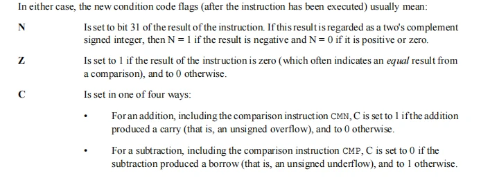
{kind=link}
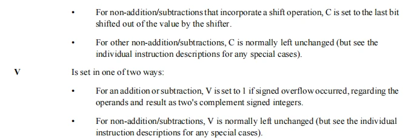
{kind=link}
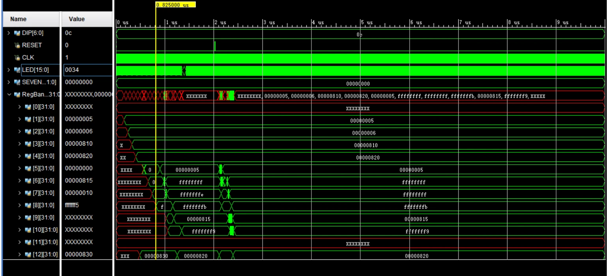
{kind=link}
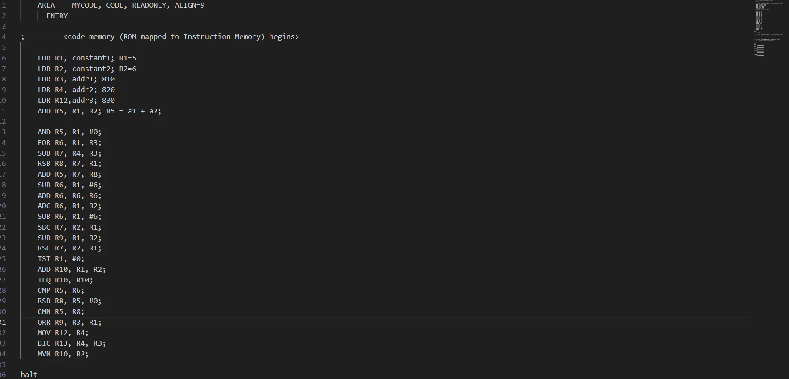
{kind=link}
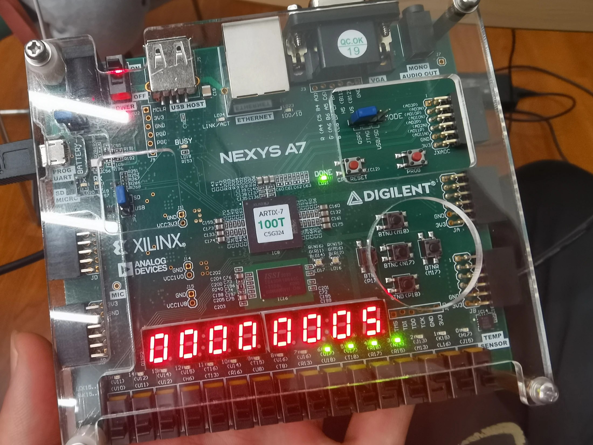
{kind=link}
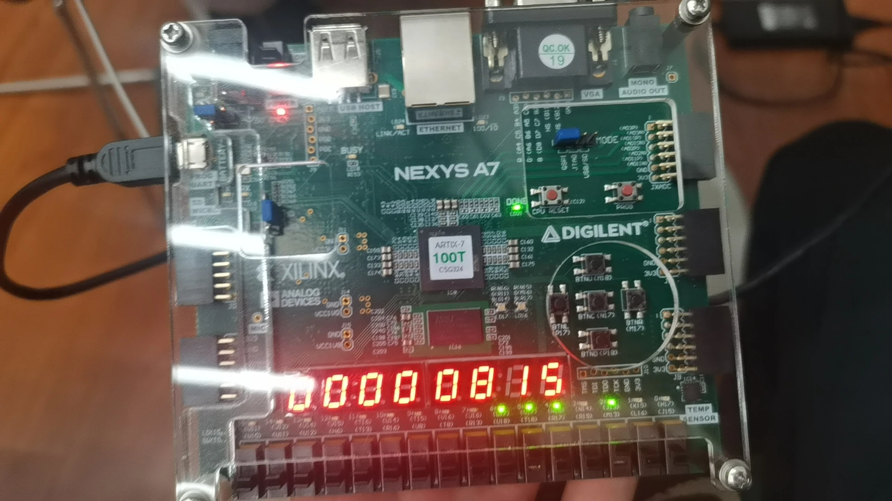
Q4 · Four-way set-associative cache
Storage organization
The cache sits between the ARM processor and memory. Four separate arrays each contain 1,024 entries: a 1-bit valid array, a 1-bit dirty array, a 22-bit tag array, and a 32-bit data array. They represent four ways across 256 sets, with one 32-bit word per block. Keeping valid, dirty, tag, and data storage separate makes updates and debugging easier. The leading bits of the combined array address select the way.
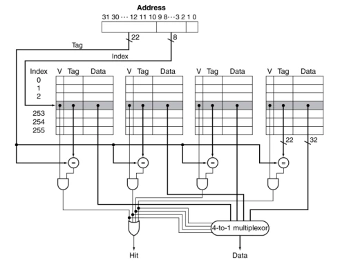
Tree-based pseudo-LRU replacement
We selected tree-based pseudo-LRU rather than exact LRU to reduce replacement-state and update complexity. Tree bits guide the replacement selection and are updated after accesses to favor a different branch next time. This approximates recency but does not always identify the true least-recently-used entry. The choice trades exact replacement ordering for lower hardware cost across 256 sets.
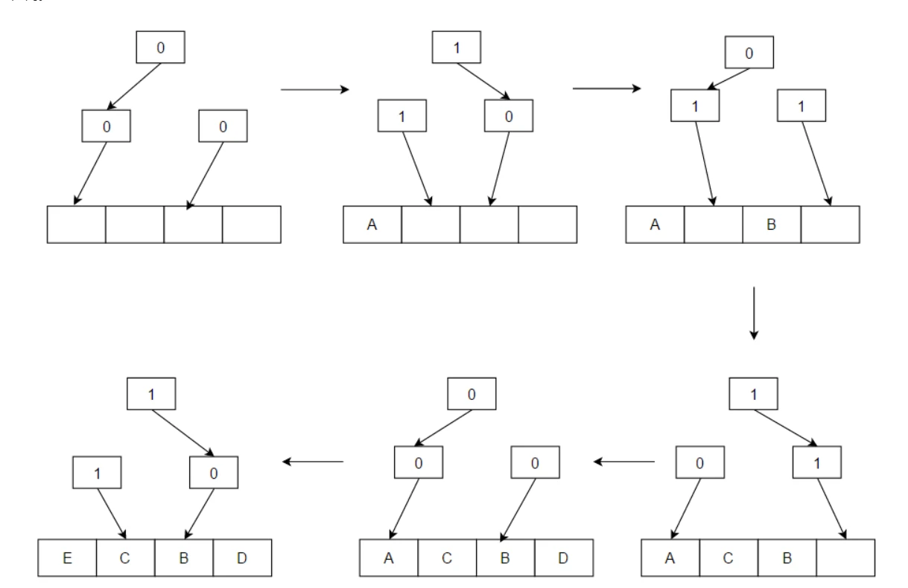
Cache access and memory interaction
The selection logic prioritizes a hit, then an unused entry, and uses pseudo-LRU only when replacement is necessary. The test memory models a five-cycle penalty. Cache fills wait for memory_ready; a miss stalls the processor.
The report describes write allocation and dirty write-back. Because each block holds only one word, a write miss can install the supplied word without fetching the rest of a block. The source narrative also describes updating memory on a write miss; the excerpts below preserve its implementation rather than asserting a fully validated cache-policy specification.
- Write hit: update the cached word and set its dirty bit.
- Write miss: after memory is ready, install the new tag and data, set valid, and mark the entry dirty.
- Read miss: after memory is ready, install the returned data and tag, set valid, and clear dirty.
- Dirty eviction: when the selected valid block is replaced on a miss, send its old data and reconstructed address to memory.
always @(posedge clk) begin
if (!Hit & !MemWrite & memory_ready) begin
Data_Block_valid[{BLK_NUM, Addr_index}] <= 1'b1;
Data_Block_Tag[{BLK_NUM, Addr_index}] <= Addr_tag;
Data_Block_Data[{BLK_NUM, Addr_index}] <= ReadData;
Data_Block_Dirty[{BLK_NUM, Addr_index}] <= 1'd0;
end
else if (Hit & MemWrite) begin
Data_Block_Data[{BLK_NUM, Addr_index}] <= WriteData;
Data_Block_Dirty[{BLK_NUM, Addr_index}] <= 1'd1;
end
else if (!Hit & MemWrite & memory_ready) begin
Data_Block_valid[{BLK_NUM, Addr_index}] <= 1'b1;
Data_Block_Tag[{BLK_NUM, Addr_index}] <= Addr_tag;
Data_Block_Data[{BLK_NUM, Addr_index}] <= WriteData;
Data_Block_Dirty[{BLK_NUM, Addr_index}] <= 1'd1;
end
end
assign Data = Tag0_equal ? Data_Block_Data[{2'd0, Addr_index}] :
Tag1_equal ? Data_Block_Data[{2'd1, Addr_index}] :
Tag2_equal ? Data_Block_Data[{2'd2, Addr_index}] :
Tag3_equal ? Data_Block_Data[{2'd3, Addr_index}] : 32'dz;
assign MemWrite2Memory = (!Hit & Data_Block_valid[{BLK_NUM, Addr_index}] &
Data_Block_Dirty[{BLK_NUM, Addr_index}]);
assign Data2Memory = Data_Block_Data[{BLK_NUM, Addr_index}];
assign MissAddr = {Data_Block_Tag[{BLK_NUM, Addr_index}], Addr_index, 2'b00};MCycle completion during a cache miss
MCycle runs independently of the pipeline and can finish while a cache miss stalls the processor. Its completion value would otherwise fail to enter Memory at the required cycle. We added an output buffer to retain the result until the miss clears, preserving the non-stalling design while preventing loss of the result.
Q4 verification
{kind=link}
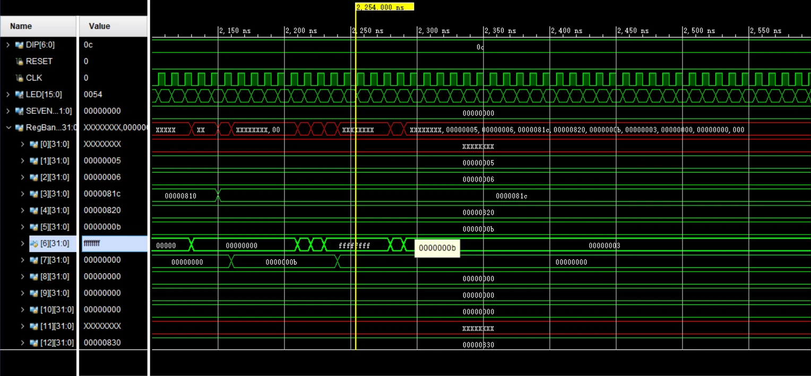
{kind=link}
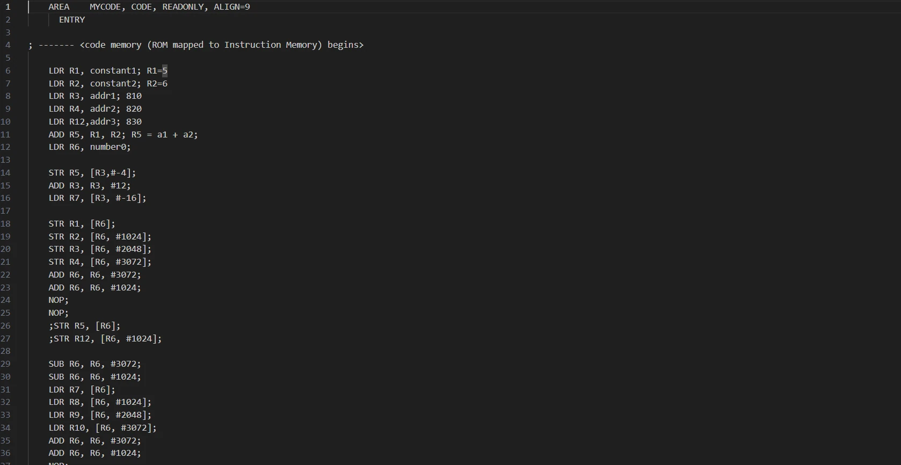
{kind=link}
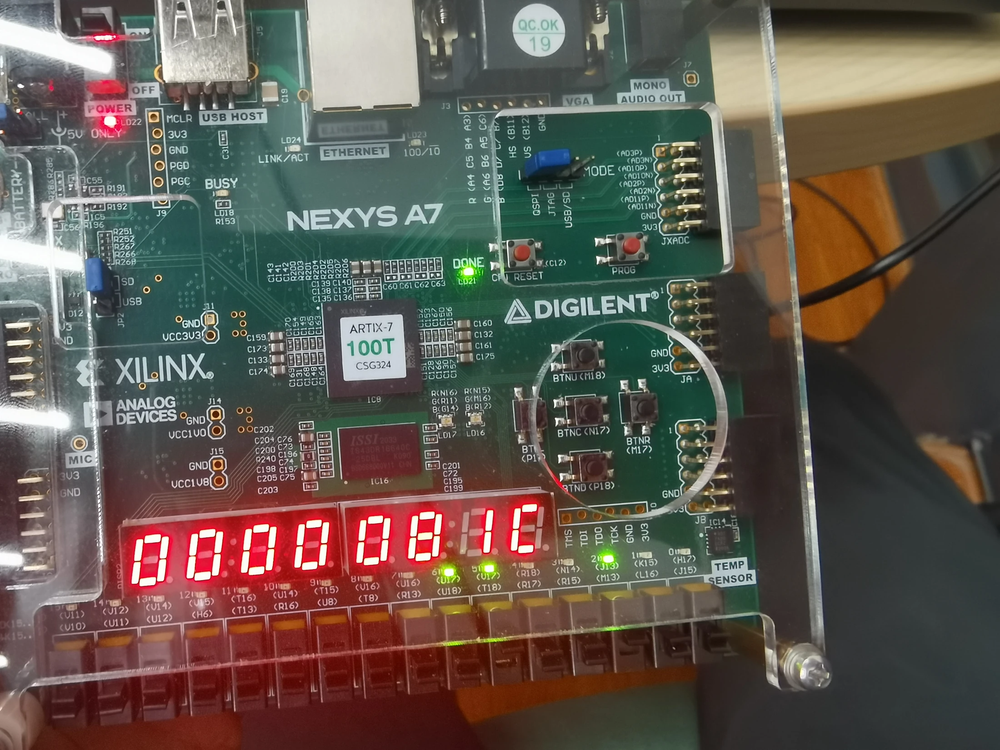
{kind=link}
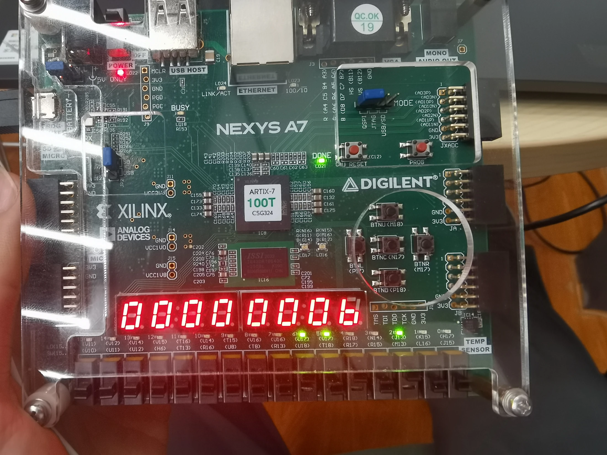
Q5 · Floating-point unit
The floating-point unit implements addition (FADD) and multiplication (FMUL) using an 8-bit exponent and a 24-bit significand including the implicit leading bit. Floating-point and integer multiply/divide operations share an expanded multi-cycle unit.
FADD: special inputs
The implementation treats subnormal inputs as zero. A NaN input produces NaN. Opposite-signed infinities added together produce NaN; otherwise an infinity propagates with its sign. The NaN representation uses an all-ones exponent and a set leading fraction bit to distinguish it from infinity. The source compares its subnormal handling with SSE2; this report describes the implemented flush-to-zero choice without implying full IEEE-754 compliance.
localparam EXP_WIDTH = 8;
localparam FRAC_WIDTH = 24;
localparam EXP_MAX = 2 ** EXP_WIDTH - 1;
// Split Operand1 into sign, exponent, and fraction.
assign {sign, exp, frac} = Operand1;
assign inf_sig = (exp == EXP_MAX) &&
(frac1 == {(FRAC_WIDTH-1){1'b0}});
assign nan_sig = (exp == EXP_MAX) &&
(frac1 != {(FRAC_WIDTH-1){1'b0}});
assign zero_sig = (exp == 0); // Subnormal inputs are treated as zero.always @(posedge CLK) begin
if (nan_sig1_add || nan_sig2_add ||
(inf_sig1_add && inf_sig2_add && sign1_add != sign2_add))
fl_out_add <= {1'b0, {EXP_WIDTH{1'b1}}, 1'b1,
{(FRAC_WIDTH-2){1'b0}}};
else if ((inf_sig1_add && !sign1_add) ||
(inf_sig2_add && !sign2_add))
fl_out_add <= {1'b0, {EXP_WIDTH{1'b1}},
{(FRAC_WIDTH-1){1'b0}}};
else if ((inf_sig1_add && sign1_add) ||
(inf_sig2_add && sign2_add))
fl_out_add <= {1'b1, {EXP_WIDTH{1'b1}},
{(FRAC_WIDTH-1){1'b0}}};
else if (zero_judge_add)
fl_out_add <= 32'b0;
else
fl_out_add <= {add_num_out[FRAC_WIDTH + 1],
exp_o_add, shift_data[FRAC_WIDTH : 2]};
endFADD: ordinary inputs
The exponents are compared and the smaller-exponent significand is shifted right to align the operands. The aligned magnitudes are converted to two's-complement form before addition. An extra bit accommodates a possible carry. The sum is then converted back to sign-and-magnitude form for normalization.
wire [EXP_WIDTH-1:0] exp_b = exp1 > exp2 ? exp1 : exp2;
wire [EXP_WIDTH-1:0] shift_num1 = exp_b - exp1;
wire [FRAC_WIDTH-1:0] shift_data1 = {1'b1, frac1} >> shift_num1;
reg signed [FRAC_WIDTH+1:0] fix_num1;
wire [FRAC_WIDTH:0] shift_data1_comp = ~shift_data1 + 1;
always @(posedge CLK) begin
if (zero_sig1) fix_num1 <= 0;
else if (sign1) fix_num1 <= {sign1, shift_data1_comp};
else fix_num1 <= {sign1, 1'b0, shift_data1};
endA binary-search-style leading-one detector examines successively smaller halves of the result. At each step, a reduction OR determines whether the upper half contains a one, and a multiplexer selects the next interval. The source's example 0x00b10 has its highest set bit at position 11 (zero-based); its written value of 10 is an arithmetic typo.
wire [31:0] a = add_num_out[FRAC_WIDTH:0];
wire [4:0] one_location;
wire [1:0] find_one1;
wire [3:0] find_one2;
wire [7:0] find_one3;
wire [15:0] find_one4;
assign one_location[4] = (|a[31:16]);
assign find_one4 = one_location[4] ? a[31:16] : a[15:0];
assign one_location[3] = (|find_one4[15:8]);
assign find_one3 = one_location[3] ? find_one4[15:8] : find_one4[7:0];
assign one_location[2] = (|find_one3[7:4]);
assign find_one2 = one_location[2] ? find_one3[7:4] : find_one3[3:0];
assign one_location[1] = (|find_one2[3:2]);
assign find_one1 = one_location[1] ? find_one2[3:2] : find_one2[1:0];
assign one_location[0] = find_one1[1];
wire zero_judge_add = (one_location == 1'b0) &&
(find_one1[0] == 1'b0) ? 1'b1 : 1'b0;
wire [EXP_WIDTH-1:0] exp_o_add = exp_b_delay + one_location - 23;
wire [EXP_WIDTH-1:0] shift_num = 25 - one_location;
wire [FRAC_WIDTH:0] shift_data = add_num_out << shift_num;The detector returns position zero for both a zero result and a result whose only set bit is bit zero. The additional zero_judge_add signal distinguishes those cases. For nonzero results, the leading one is removed from the stored fraction and the exponent is adjusted accordingly.
FMUL
NaNs and subnormal inputs follow the same treatment as FADD. The implementation propagates infinity using the XOR of the input signs. For ordinary inputs, the implicit leading bits are restored and the two significands enter a multiplier, which returns a 48-bit product after 25 cycles. The full FMUL latency is reported as 26 cycles; FADD has a latency of three cycles.
A product of two normalized significands lies between 1 and 4, so its top bit selects the normalization shift and any additional exponent increment. The exponent sum subtracts the single-precision bias of 127. An extra exponent bit drives the implementation's infinity-selection signal. These excerpts retain the source's simplified exceptional-value behavior, including its handling of exponent-range cases; the report does not establish exhaustive corner-case correctness.
wire [EXP_WIDTH:0] exp_mul = exp1_delay + exp2_delay - 127;
wire [EXP_WIDTH:0] exp_mul_p = exp_mul + 1;
wire inf_judge = add_one_sig ? exp_mul_p[EXP_WIDTH] : exp_mul[EXP_WIDTH];
wire [FRAC_WIDTH-2:0] mantissa_mul =
add_one_sig ? mul_num_out[FRAC_WIDTH*2-2 -: (FRAC_WIDTH-1)] :
mul_num_out[FRAC_WIDTH*2-3 -: (FRAC_WIDTH-1)];
wire [EXP_WIDTH-1:0] exp_o_mul =
add_one_sig ? exp_mul_p[EXP_WIDTH-1:0] : exp_mul[EXP_WIDTH-1:0];
always @(posedge CLK) begin
if (nan_sig1_mul || nan_sig2_mul)
fl_out_mul <= {1'b0, {EXP_WIDTH{1'b1}}, 1'b1,
{(FRAC_WIDTH-2){1'b0}}};
else if (inf_sig1_mul || inf_sig2_mul || inf_judge)
fl_out_mul <= {sign_mul_delay, {EXP_WIDTH{1'b1}},
{(FRAC_WIDTH-1){1'b0}}};
else
fl_out_mul <= {sign_mul_delay, exp_o_mul, mantissa_mul};
endInstruction encoding and verification
Because the Keil assembler used for the project could not assemble the custom FADD instruction, the team assigned encodings near integer division: SBZ = 0000 for integer division, 0001 for FADD, and 0010 for FMUL. Raw instruction constants were placed in the Wrapper files. Tests covered ordinary operations and selected exceptional inputs; the source reports agreement between expected results and the observed waveforms.
LDR R1, constant1 ; +infinity
LDR R2, constant2
LDR R3, constant3
LDR R4, constant4
LDR R5, constant5
FADD R6, R2, R3 ; 0000_0000
FADD R7, R2, R2 ; 6370_0000
FADD R8, R2, R5 ; -1 * 2^48
FMUL R9, R1, R3 ; ff80_0000 (-infinity)
FMUL R10, R2, R2 ; 7f80_0000 (+infinity)
FADD R11, R2, R9 ; -infinity
FADD R12, R10, R9 ; 7fc0_0000 (NaN)
FMUL R13, R3, R4 ; 636f_ffff
FMUL R14, R12, R2 ; 7fc0_0000 (NaN)
constant1 DCD 0x7f80_0000
constant2 DCD 0x62f0_0000
constant3 DCD 0xe2f0_0000
constant4 DCD 0xbfff_ffff
constant5 DCD 0xe2f0_0001Q6 · RV32I processor
The final main task adapts the processor to RV32I. Its four core instruction formats are R, I, S, and U; B and J are related formats for conditional branches and jumps. Their immediate fields use different bit arrangements. Register fields occupy consistent locations, while opcode, funct3, and funct7 distinguish operations.
RV32I instruction references
{kind=link}
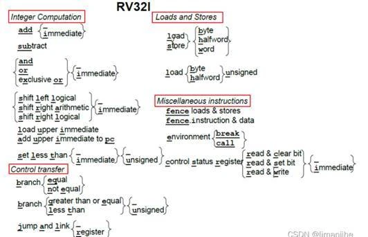
{kind=link}
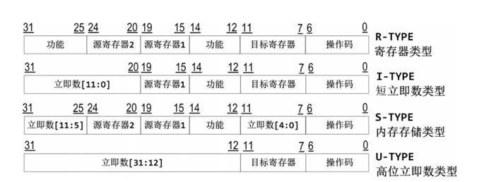
{kind=link}
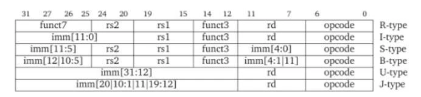
{kind=link}
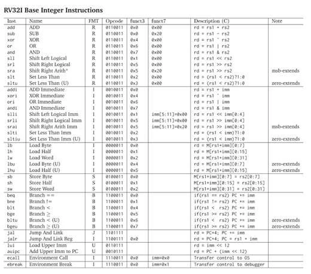
{kind=link}
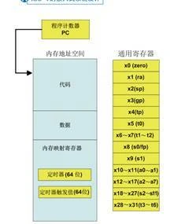
Differences from the ARM implementation
- RV32I has 32 integer registers, with x0 fixed at zero; the program counter is separate from the register file.
- Shifts are ALU operations rather than a shifted operand combined with another operation.
- The immediate-generation module must handle several layouts, including noncontiguous fields. Arithmetic immediates require sign extension, while shift amounts and upper-immediate fields need format-specific handling.
- Loads and stores have additional width and extension requirements.
- Branches compare register operands and select a PC-relative target.
- JAL both writes PC + 4 to a destination register and redirects execution.
- ARM-style general conditional execution is removed.
Implementation changes
- Expand the register bank to 32 entries and force x0 reads to zero.
- Connect source and destination addresses directly to the fixed instruction fields rather than selecting ARM register fields through multiplexers.
- Add a PC-versus-RD1 selector outside the ALU, controlled by
ALUSrc_A. - Expand ALU control to 12 operations: ten R-type-related operations and two U-type operations. Remove the separate Shift module.
- Replace CondLogic with a dedicated
state_comparemodule for branch comparisons. Feed its condition result into the Decoder. - Extend immediate-control signals so that each instruction format assembles and extends its immediate correctly.
- Use a Decoder-generated
PC4signal to select PC + 4 for register writeback on JAL. - Use an
Immcontrol to select the lower five bits of Src_B where a shift amount is needed. - Add
PCsrc_directfor unconditional control transfers and combine it with the other PC-selection logic.
RV32I code and verification
{kind=link}
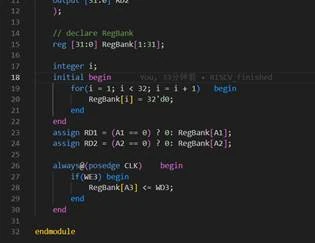
{kind=link}
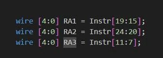
{kind=link}
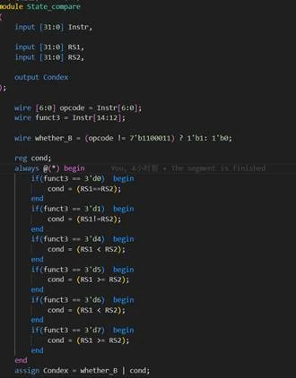
{kind=link}
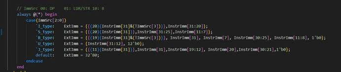
{kind=link}
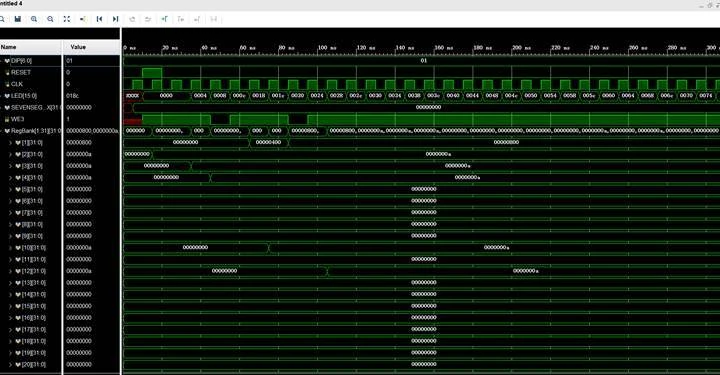
{kind=link}
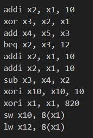
The report states that register arithmetic, immediate arithmetic, jumps, and memory-access tests produced the expected results in simulation and passed on-board testing. With switch 4 selected, the seven-segment display showed 0000000A.
Bonus · Dual-issue superscalar extension
The bonus design fetches two consecutive instructions and checks whether they can execute together. If both issue, PC advances by eight bytes. Otherwise, only the first issues, PC advances by four bytes, and the second lane receives AND R1, R1 as the project's placeholder instruction. Although the source sometimes calls this a “dual-core” design, its described mechanism is a shared-register-file, dual-issue extension.
Issue restrictions and forwarding
- Read after write: if the second instruction reads a register written by the first, the design must either resolve the dependency through the supported forwarding paths or serialize the pair. An unresolved load dependency requires a stall.
- Write after write: if both instructions target the same register, the second does not issue in that cycle.
- Control flow: if the first instruction is a branch, the second is suppressed because it may lie on the wrong path.
- Conditional execution: the issue logic also restricts combinations involving flag-setting and condition-dependent instructions, as shown in the source excerpt.
always @(*) begin
if (op1 == 2'b10)
sup_sig = 1'b0;
else if (op1 == 2'b00 && S1 == 1'b1 && cond2[3:1] != 3'b111)
sup_sig = 1'b0;
else if (op2 == 2'b00 && (Rd1 == Rm2 || (Rd1 == Rs2 && r2or1)))
sup_sig = 1'b0;
else if (Rd1 == Rd2)
sup_sig = 1'b0;
else
sup_sig = 1'b1;
end
assign Instr2_out = sup_sig ? Instr2 : 32'hE001_1001;Forwarding must consider two result streams, so data-selection multiplexers have more inputs and wider control signals. The shared RegisterFile has twice the read and write port count of the single-issue version. Pairwise WAW conflicts are suppressed before issue.
Verification sequence
LDR R1, constant1
ADD R2, R1, R1
SUB R3, R1, R2
ADD R4, R1, R2
SUB R5, R2, R4
ADD R6, R3, R4
SUB R7, R6, R1
ADD R8, R4, R7
constant1 DCD 0x0000_0009The dependent early operations issue separately. The source identifies the SUB R3 / ADD R4 pair and the SUB R5 / ADD R6 pair as simultaneous, with the latter exercising forwarding across both result streams. SUB R7 and ADD R8 serialize because the latter needs R7. The reported writeback order is R1, R2, R3/R4 together, R5/R6 together, R7, and R8.
| Register | Value derived from the listed instructions |
|---|---|
| R1 | 0x00000009 (9) |
| R2 | 0x00000012 (18) |
| R3 | 0xfffffff7 (−9) |
| R4 | 0x0000001b (27) |
| R5 | 0xfffffff7 (−9) |
| R6 | 0x00000012 (18) |
| R7 | 0x00000009 (9) |
| R8 | 0x00000024 (36) |
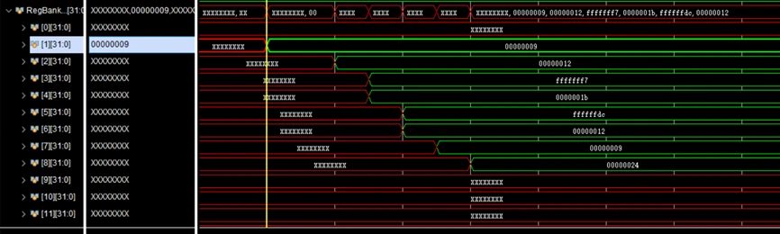